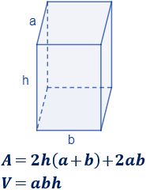
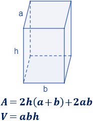

Un prisma cuadrangular es un poliedro que tiene dos bases cuadradas y cuatro caras laterales que son rectángulos. Las caras laterales son rectángulos, pero las bases pueden ser cuadrados o rectángulos.
Podemos distinguir dos tipos de prisma cuadrangular: Regular: Sus bases son cuadrados (cuadriláteros regulares con lados y ángulos interiores iguales) y sus caras laterales son rectángulos idénticos entre sí. Irregular: Sus bases no cuadrados, sino cuadriláteros irregulares, ya sean rectángulos, rombos, romboides, trapecios o trapezoides. Un prisma cuadrangular también puede ser recto u oblicuo.
La fórmula para calcular el volumen de cualquier prisma recto es la misma: V = área de la base por altura.
V = Bh , donde B es el área de la base y h es la altura. La base del prisma es un rectángulo.
El área total de un prisma cuadrangular se calcula sumando el área de sus dos bases cuadrangulares más el área de sus cuatro caras laterales.
Por lo tanto, el área de un prisma cuadrangular regular es igual al doble del lado de la base multiplicado por la suma del lado más el doble de la altura del prisma cuadrangular.
Es decir, la fórmula para calcular el área de un prisma cuadrangular regular es la siguiente: A=2L . (L+2h)
Para calcular el área y el volumen de un prisma cuadrangular, sigue estos pasos: Área de la base: Mide uno de los lados del cuadrado que forma la base del prisma y calcula el área utilizando la fórmula: Área = lado². Área lateral: Mide la altura del prisma y calcula el perímetro del cuadrado base. Luego, multiplique el perímetro por la altura para obtener el área lateral: Área lateral = Perímetro × altura. Área total: Suma el área de la base y el área lateral: Área total = Área de la base + Área lateral. Volumen: Multiplica el área de la base por la altura del prisma: Volumen = Área de la base × altura.
 
